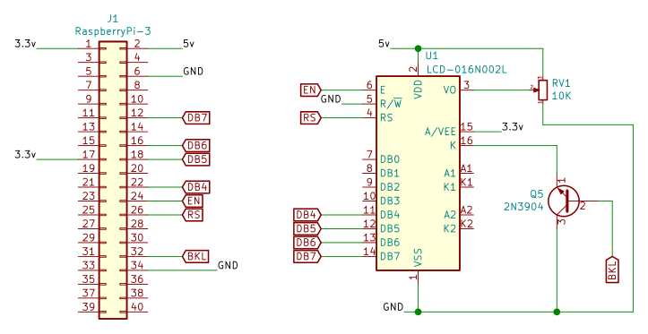
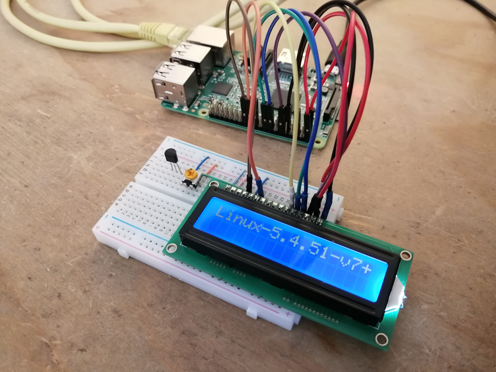
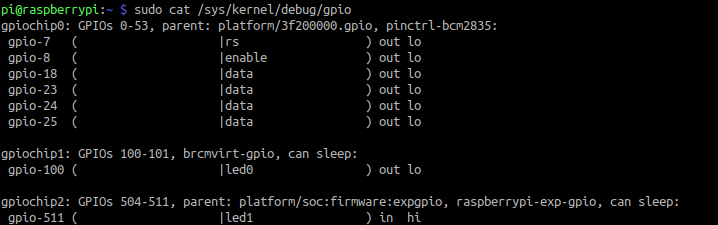
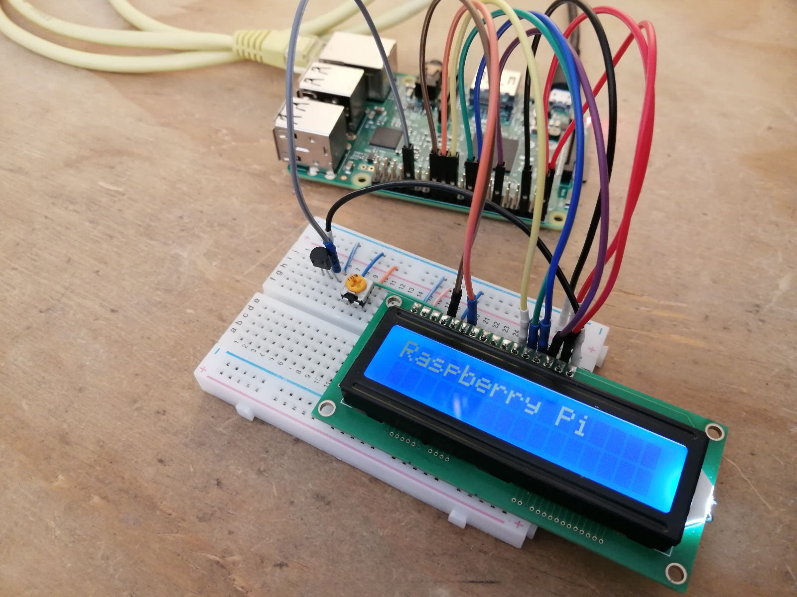
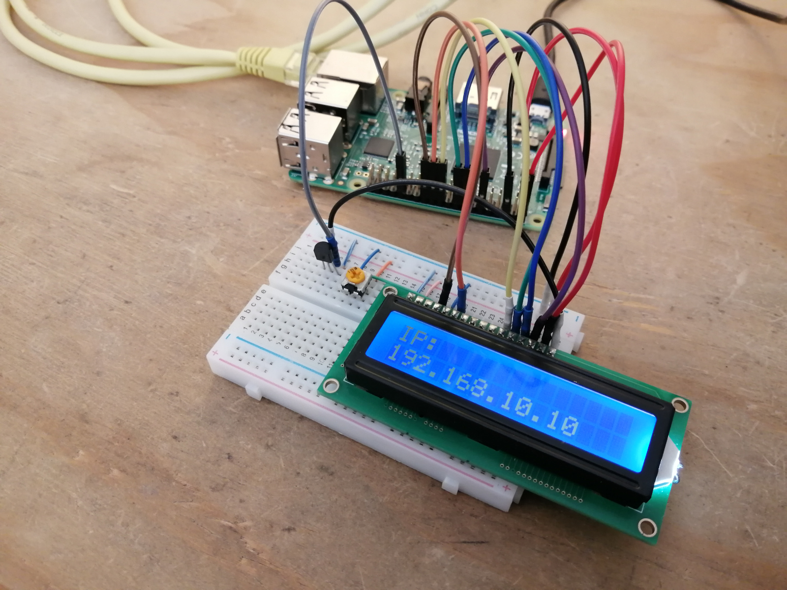

I want to control a generic LCD 16x02 with a Raspberry Pi but doing it differently. Instead of using any user space program, I want a linux driver to handle the communication with the LCD. Maybe in the future I will used the LCD as a console to display information about the system.
For the following tutorial I used a Raspberry Pi 3 Model B with linux kernel version 5.4.51-v7+.
Already a driver available
Although my initial idea was to program a kernel driver for the LCD, I found out that there are already a couple of drivers available for this device since, in old computers, the parallel port was used to communicate with LCDs. There is the mainline kernel driver and some other drivers that are for those LCDs that have a PCF8574 IC. This integrated circuit saves pins because you communicate with it through I2C protocol.
Additionally, the Raspberry Pi kernel image has a device tree overlay specifically for the HD44780, which defines the pins connected to the LCD. This is extremely useful since you can override these pins with those which the LCD is going to use.
Even though I still wanted to get my hands on some code, I thought more about it and I decided to install the already available driver. The decision is because I still kind of a newbie in programming kernel drivers.
There are two main kernel modules that control this LCD. The first one is the driver especifically for the HD44780 integrated circuit, which communicates with the LCD. The other is the kernel module charlcd which serves as an interface between the user and the driver. This module receives the characters and commands that later will send to the LCD.
Building the circuit
The following image describes which pins of the LCD are connected to the gpios on the board. I added a transistor to turn on or off the LCD's led backlight. However, for the moment connect the led backlight to 3.3v given that the driver does not control it, later we will fix this.

HD44780 devicetree overlay
Lucky for us, raspberry pi has an overlay for the devicetree which allows to set the pins for the LCD. The devicetree overlay is important as it defines the peripheral's pins and hardware configuration which later the driver is going to read.
In the documentation are defined the parameters that have to be set to configure the LCD. It's important to notice that RW pin is not defined, this means we can't read from the LCD. Keep this in mind in when building the circuit.
Name: hd44780-lcd
Info: Configures an HD44780 compatible LCD display. Uses 4 gpio pins for
data, 2 gpio pins for enable and register select and 1 optional pin
for enabling/disabling the backlight display.
Load: dtoverlay=hd44780-lcd,=
Params: pin_d4 GPIO pin for data pin D4 (default 6)
pin_d5 GPIO pin for data pin D5 (default 13)
pin_d6 GPIO pin for data pin D6 (default 19)
pin_d7 GPIO pin for data pin D7 (default 26)
pin_en GPIO pin for "Enable" (default 21)
pin_rs GPIO pin for "Register Select" (default 20)
pin_bl Optional pin for enabling/disabling the
display backlight. (default disabled)
display_height Height of the display in characters
display_width Width of the display in characters Edit the /boot/config.txt to add the devicetree overlay and to define the pinout for the LCD.
dtoverlay=hd44780-lcd,pin_d4=25,pin_d5=24,pin_d6=23,pin_d7=18,pin_rs=7,pin_en=8,display_width=16,display_height=2
IMPORTANT: Check twice that you have written correctly the dtbo overlay parameters. If there are any misspelled words, the kernel module will not get the properties from the devicetree overlay and therefore the LCD will not work.
Use the LCD
If everything is connected correctly, at boot time you should see the kernel version.

The lcd appears as a character device on the linux system. Give it write and read permissions before sending anything to it. The permissions could be also changed in a udev rule.
sudo chmod a+rw /dev/lcd
To send characters to the LCD execute the following command:
echo -ne "Raspberry PI" > /dev/lcd
Although in the source code of charlcd.c is the list of commands the interface accepts, here I post the complete list of commands for future references.
General commands and special commands:
| Command | Description |
|---|---|
| '\b' | back one character and clear it |
| '\014' | clear the display |
| '\n' | new line |
| '\r' | go to the beginning of the same line |
| '\t' | prints a space instead of a tab |
| '\x1b[2J' | clear the display |
| '\x1b[h' | set cursor at home |
| Special commands | Description |
|---|---|
| '\x1b[LD' | display on |
| '\x1b[Ld' | display off |
| '\x1b[LC' | cursor on |
| '\x1b[Lc' | cursor off |
| '\x1b[LB' | blink on |
| '\x1b[Lb' | blink off |
| '\x1b[L+' | backlight on |
| '\x1b[L-' | backlight off |
| '\x1b[L*' | flash backlight |
| '\x1b[Lf' | small font |
| '\x1b[LF' | large font |
| '\x1b[Ln' | one line |
| '\x1b[LN' | two lines |
| '\x1b[Ll' | shift cursor left |
| '\x1b[Lr' | shift cursor right |
| '\x1b[LL' | shift display left |
| '\x1b[LR' | shift display right |
| '\x1b[Lk' | kill end of line |
| '\x1b[LI' | reinitialize display |
| '\x1b[LGcxxx..xx' | Generate custom character. 'c' is the charcter number [0..7], 'xxx...xx' is 16 hex digits representing 8 bytes. |
| '\x1b[LxXXX[yYYY]' | goto xy |
Enable backlight command
As I mentioned before, the backlight pin is not enabled by default. We can change this in the devicetree overlay. Write the following to check which pins are used in the raspberry pi:
sudo cat /sys/kernel/debug/gpio

We can confirm the backlight pin is not used. The solution is to edit the file arch/arm/boot/overlay/hd44780-lcd-overlay.dts and replace the label dormant with overlay:
fragment@1 {
target = <&lcd_screen>;
__overlay__ {
backlight-gpios = <&gpio 12 0>;
};
};To compile the overlay install the devicetree compiler and then execute the command below. This step I run it in my laptop not in the Raspberry Pi:
sudo apt install device-tree-compiler
dtc -@ -I dts -O dtb -o hd44780-lcd.dtbo arch/arm/boot/dts/overlays/hd44780-lcd-overlay.dts
Note: when the compilation finishes it shows a lot of warnings, just pay attention if an error arises due to a misspelled word.
Transfer the .dtbo file to the Raspberry Pi and copy it into the boot partition. In my case I setup a local connection between the Raspberry Pi and my laptop, both are connected through an ethernet cable. To transfer the file I use scp:
scp hd44780-lcd.dtbo pi@192.168.1.72:/home/pi
# On the Raspberry Pi:
sudo mv ~/hd44780-lcd.dtbo /boot/overlays/
sudo reboot
Remember to connect the transistor to the gpio and to the LCD. To turn on the backlight send the following command:
echo -ne "\x1b[L+" > /dev/lcd
Now the backlight works.

Example: Display IP address at boot time
If you have logged into the Raspberry Pi throught the serial console, you may have noticed that during boot time, when the kernel is loading all the systemd services, it shows the IP addres of the board if it successfully connects to an existing network previously configured.
The service that shows this IP address is in /lib/systemd/system/rc-local.service. If we take a look inside it, the service executes the /etc/rc.local file. In it are the instructions to show the IP address, let's modify it to display the IP address on the LCD.
First, create the file display_ip_addr.sh under the home directory.
cd ~/
touch display_ip_addr.sh
chmod a+x display_ip_addr.sh
Append the following code in the file.
#/bin/bash
DEV_LCD=/dev/lcd
_IP=$1
if [ -e "$DEV_LCD" ]; then
if [ -c "$DEV_LCD" ]; then
echo -ne "\x1b[L+\x1b[2JIP:\n$_IP" > $DEV_LCD
fi
fiThen edit the file /etc/rc.local. Create a backup of this file just in case.
...
#Print the IP address
DEV_LCD=/dev/lcd
_IP=$(hostname -I) || true
if [ "$_IP" ]; then
if [ -e "$DEV_LCD" ]; then
chmod a+rw $DEV_LCD
/bin/bash /home/pi/display_ip_addr.sh $_IP
fi
printf "My IP address is %s\n" "$_IP"
fi
exit 0Reboot the system and after it shows the linux kernel version you should see Raspberry Pi's IP address

That's all for now. Hope you have enjoyed this tutorial and if you have any question send me an e-mail and I'll be glad to answer.
References
-
HD44780 overlay documentation: https://github.com/raspberrypi/linux/blob/rpi-5.10.y/arch/arm/boot/dts/overlays/README
-
charlcd driver: https://github.com/torvalds/linux/blob/master/drivers/auxdisplay/charlcd.c
-
hd47780 driver: https://github.com/torvalds/linux/blob/master/drivers/auxdisplay/hd44780.c